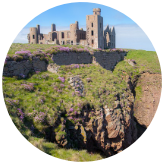

3 Anniversary Days of Dracula
- SHORT SCOTLAND TOUR -
with Dacre Stoker
UK
May 25th-27th 2022
We will celebrate the 125 years anniversary of the publication of the novel ”Dracula” together with Bram Stoker’s very great-grandnephew. And which location would be more appropriate than the very place where Bram Stoker spent months, writing, taking inspirational beach walks, and writing again. Our local expert is Mike Shepherd, a Cruden Bay resident and scholar, who has been doing a vast research of Bram’s holidays in Cruden Bay. Absorb the atmosphere, learn the history, and experience the dramatic beauty of wild Scotland, together with knowledgeable tour leaders. The participants to this tour will be joining the larger group of the extended tour (starting in Manchester). If you choose this shorter tour, you will be joining the rest of the group in Edinburgh.
Some of the hikes in Cruden Bay are strenuous and will require waterproof, above the ankle, footwear. May’s weather in coastal Scotland can be unpredictable, so waterproof rain gear and layers are recommended.
Good to know before the tour!
With Transylvanian local guide/tour manager Nora Vintila and great grand nephew of Bram Stoker, international best selling author Dacre Stoker.
Day 1
Wednesday May 25th / Edinburgh - Cruden Bay
Scotland's East Coast
Join the rest of the group in Edinburgh that’s traveling from far away, stepping down into the hidden history of Edinburgh, at the Real Mary King’s Close. On this one-hour tour we will experience over 400 years of history and discover the stories from myths and legends to the deadly plague epidemic, and a famous royal visitor as we delve into Edinburgh’s dark past. We then travel from Edinburgh to Cruden Bay, with exciting stops on the way, such as Dundee and Dunnottar Castle, where we also have lunch (depending on the weather, Dunnottar Castle can be closed on stormy days, if this is the case, we will visit another, more inland, castle). We arrive at the Kilmarnock Arms Hotel in Cruden Bay in the afternoon, where Bram Stoker himself was a guest in 1893. We will be joined by local author Mike Shepherd, who has written a book about Bram Stoker’s summer visits to this area, and another on the history of Slains Castle, for an informal orientation walk around town. Dinner is served at the hotel, followed by an audio-visual presentation with Dacre and Mike about “Bram Stoker’s Cruden Bay Experiences”.
Day 2
Thursday May 26th / Cruden Bay
125 years of Dracula
Today we celebrate 125 years since the novel Dracula was published. This calls for a champagne breakfast! We then start off at the Kilmarnock Arms Hotel for an exciting beach walk with Mike Shepherd which recreates Bram Stoker’s daily “inspirational writing” walks. Enjoy first-hand the locations Bram frequented while writing Dracula and mentioned in two of his novels based in Cruden Bay. ”The Mystery of the Sea” 1902 and ”The Watters Mou” 1895. Back to the hotel for lunch, after which we continue our walk to the ruins of Slains Castle. We have a fantastic view of the facade, while Dacre and Mike reveal images of the octagonal room featured in chapter 2 of Dracula (access within the ruins is prohibited due to site safety risks). Enjoy some free time for exploring Cruden Bay at your pace, or to re-read pages of the novel to get into the atmosphere of the celebration. A festive dinner is served at the Kilmarnock Arms Hotel. May 26th, the day when the vampire count got his first limelight flash, is celebrated with sparkling wine, interesting talks and enthusiastic minglers.
Day 3
Friday May 27th / Glasgow
Last day We check out from Cruden Bay and drive southwards. We stop for a admiring a natural wonder on the coast at Bullers of Buchan, and then continue with a visit at picturesque Fyvie Castle, where ghosts, legends and folklore are all woven into the tapestry the 800-year-old history of this place. The coach ride continues to Glasgow, with a tasty goodbye lunch on the way. This is where our Dracula jubilee host Dacre Stoker and our Transylvania expert Nora Vintila say goodbye. Hotel booking available for an extra charge. La revedere, see you in Transylvania next time!
PRICE
Limited seats (approx 5-10): 870 €/pers, including:
- accommodation 2 nights in double occupancy in top rank hotels
- transfers by private coach
- activities, entrance fees according to program
- Dacre Stoker as tour leader & Dracula expert
- Nora Vintila as a tour manager & Transylvanian history expert
- meals according to program: 2 breakfasts, 2 lunches, 2 dinners (including the gala dinner), excluding all beverages, except for the welcome drinks mentioned in the program
The price excludes: flight, insurance, single room supplement, beverages, gratuities for staff (tips), flight, excursions or activities other than those mentioned.
Single room supplement: 120 €
Please note that all activities are subject to change, due to local conditions and to the pandemic situation. We can assure you that Experience Transylvania and Dacre Stoker strive for the perfect experience for you as a guest, which is why we might change certain activities for better or more appropriate ones, in case the itinerary, the weather conditions or the safety of the sites impose that case.
Deadline for Early Bird bookings (100 € discount): December 15th 2021
Seats on this tour are limited!
By submitting your booking request, you simply inform us of your wish to join this tour. At the moment, this submission does not involve any obligations for you as a tentative guest. The contract between you as a traveler and Experience Transylvania as an organizer starts only when you’ve received the final program, along with the terms & conditions, and when you’ve paid your booking fee amounting 200 € (non-refundable).